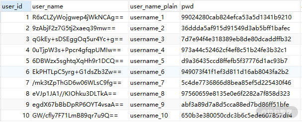

10 数据脱敏：如何确保敏感数据的安全访问？¶
从今天开始，我们又将开始一个全新的主题：介绍 ShardingSphere 中的数据脱敏功能。所谓数据脱敏，是指对某些敏感信息通过脱敏规则进行数据转换，从而实现敏感隐私数据的可靠保护。在日常开发过程中，数据安全一直是一个非常重要和敏感的话题。相较传统的私有化部署方案，互联网应用对数据安全的要求更高，所涉及的范围也更广。根据不同行业和业务场景的属性，不同系统的敏感信息可能有所不同，但诸如身份证号、手机号、卡号、用户姓名、账号密码等个人信息一般都需要进行脱敏处理。
ShardingSphere 如何抽象数据脱敏？¶
数据脱敏从概念上讲比较容易理解，但在具体实现过程中存在很多方案。在介绍基于数据脱敏的具体开发过程之前，我们有必要先来梳理实现数据脱敏的抽象过程。这里，我将从敏感数据的存储方式、敏感数据的加解密过程以及在业务代码中嵌入加解密的过程这三个维度来抽象数据脱敏。

针对每一个维度，我也将基于 ShardingSphere 给出这个框架的具体抽象过程，从而方便你理解使用它的方法和技巧，让我们来一起看一下。
敏感数据如何存储？¶
关于这个问题，要讨论的点在于是否需要将敏感数据以明文形式存储在数据库中。这个问题的答案并不是绝对的。
我们先来考虑第一种情况。对于一些敏感数据而言，我们显然应该直接以密文的形式将加密之后的数据进行存储，防止有任何一种途径能够从数据库中获取这些数据明文。 在这类敏感数据中，最典型的就是用户密码，我们通常会采用 MD5 等不可逆的加密算法对其进行加密，而使用这些数据的方法也只是依赖于它的密文形式，不会涉及对明文的直接处理。但对于用户姓名、手机号等信息，由于统计分析等方面的需要，显然我们不能直接采用不可逆的加密算法对其进行加密，还需要将明文信息进行处理 。 一种常见的处理方式是将一个字段用两列来进行保存，一列保存明文，一列保存密文，这就是第二种情况。
显然，我们可以将第一种情况看作是第二种情况的特例。也就是说，在第一种情况中没有明文列，只有密文列。
ShardingSphere 同样基于这两种情况进行了抽象，它将这里的明文列命名为 plainColumn，而将密文列命名为 cipherColumn。其中 plainColumn 属于选填，而 cipherColumn 则是必填。同时，ShardingSphere 还提出了一个逻辑列 logicColumn 的概念，该列代表一种虚拟列，只面向开发人员进行编程使用：
{kind=link}
敏感数据如何加解密？¶
数据脱敏本质上就是一种加解密技术应用场景，自然少不了对各种加解密算法和技术的封装。传统的加解密方式有两种，一种是对称加密，常见的包括 DEA 和 AES；另一种是非对称加密，常见的包括 RSA。 ShardingSphere 内部也抽象了一个 ShardingEncryptor 组件专门封装各种加解密操作：
public interface ShardingEncryptor extends TypeBasedSPI {
//初始化
void init();
//加密
String encrypt(Object plaintext);
//解密
Object decrypt(String ciphertext);
}
目前，ShardingSphere 内置了 AESShardingEncryptor 和 MD5ShardingEncryptor 这两个具体的 ShardingEncryptor 实现。当然，由于 ShardingEncryptor 扩展了 TypeBasedSPI 接口，所以开发人员完全可以基于微内核架构和 JDK 所提供的 SPI 机制来实现和动态加载自定义的各种 ShardingEncryptor。我们会在“微内核架构：ShardingSphere 如何实现系统的扩展性？”这个课时中对 ShardingSphere 中的微内核架构和 SPI 机制进行详细的讨论。
业务代码中如何嵌入数据脱敏？¶
数据脱敏的最后一个抽象点在于如何在业务代码中嵌入数据脱敏过程，显然这个过程应该尽量做到自动化，并且具备低侵入性，且应该对开发人员足够透明。
我们可以通过一个具体的示例来描述数据脱敏的执行流程。假设系统中存在一张 user 表，其中包含一个 user_name 列。我们认为这个 user_name 列属于敏感数据，需要对其进行数据脱敏。那么按照前面讨论的数据存储方案，可以在 user 表中设置两个字段，一个代表明文的 user_name_plain，一个代表密文的 user_name_cipher。然后应用程序通过 user_name 这个逻辑列与数据库表进行交互：
{kind=link}
针对这个交互过程，我们希望存在一种机制，能够自动将 user_name 逻辑列映射到 user_name_plain 和 user_name_cipher 列。同时，我们希望提供一种配置机制，能够让开发人员根据需要灵活指定脱敏过程中所采用的各种加解密算法。
作为一款优秀的开源框架，ShardingSphere 就提供了这样一种机制。那么它是如何做到这一点呢？
首先，ShardingSphere 通过对从应用程序传入的 SQL 进行解析，并依据开发人员提供的脱敏配置对 SQL 进行改写，从而实现对明文数据的自动加密，并将加密后的密文数据存储到数据库中。当我们查询数据时，它又从数据库中取出密文数据，并自动对其解密，最终将解密后的明文数据返回给用户。ShardingSphere 提供了自动化+透明化的数据脱敏过程，业务开发人员可以像使用普通数据那样使用脱敏数据，而不需要关注数据脱敏的实现细节。
系统改造：如何实现数据脱敏？¶
接下来，就让我们继续对系统进行改造，并添加数据脱敏功能吧。这个过程主要有三个步骤：准备数据脱敏、配置数据脱敏和执行数据脱敏。
准备数据脱敏¶
为了演示数据脱敏功能，我们重新定义一个 EncryptUser 实体类，该类中定义了与数据脱敏相关的常见用户名、密码等字段，这些字段与数据库中 encrypt_user 表的列是一一对应的：
public class EncryptUser {
//用户Id
private Long userId;
//用户名（密文）
private String userName;
//用户名（明文）
private String userNamePlain;
//密码（密文）
private String pwd;
…
}
接下来，我们有必要提一下 EncryptUserMapper 中关于 resultMap 和 insert 语句的定义，如下所示：
<mapper namespace="com.tianyilan.shardingsphere.demo.repository.EncryptUserRepository">
<resultMap id="encryptUserMap" type="com.tianyilan.shardingsphere.demo.entity.EncryptUser">
<result column="user_id" property="userId" jdbcType="INTEGER"/>
<result column="user_name" property="userName" jdbcType="VARCHAR"/>
<result column="pwd" property="pwd" jdbcType="VARCHAR"/>
</resultMap>
<insert id="addEntity">
INSERT INTO encrypt_user (user_id, user_name, pwd) VALUES (#{userId,jdbcType=INTEGER}, #{userName,jdbcType=VARCHAR}, #{pwd,jdbcType=VARCHAR})
</insert>
…
</mapper>
请注意，我们在 resultMap 中并没有指定 user_name_plain 字段，同时，insert 语句中同样没有指定这个字段。
有了 Mapper，我们就可以构建 Service 层组件。在这个 EncryptUserServiceImpl 类中，我们分别提供了 processEncryptUsers 和 getEncryptUsers 方法来插入用户以及获取用户列表。
@Service
public class EncryptUserServiceImpl implements EncryptUserService {
@Autowired
private EncryptUserRepository encryptUserRepository;
@Override
public void processEncryptUsers() throws SQLException {
insertEncryptUsers();
}
private List<Long> insertEncryptUsers() throws SQLException {
List<Long> result = new ArrayList<>(10);
for (Long i = 1L; i <= 10; i++) {
EncryptUser encryptUser = new EncryptUser();
encryptUser.setUserId(i);
encryptUser.setUserName("username_" + i);
encryptUser.setPwd("pwd" + i);
encryptUserRepository.addEntity(encryptUser);
result.add(encryptUser.getUserId());
}
return result;
}
@Override
public List<EncryptUser> getEncryptUsers() throws SQLException {
return encryptUserRepository.findEntities();
}
}
现在，业务层代码已经准备就绪。由于数据脱敏功能内嵌在 sharding-jdbc-spring-boot-starter 中，所以我们不需要引入额外的依赖包。
配置数据脱敏¶
在整体架构上，和分库分表以及读写分离一样，数据脱敏对外暴露的入口也是一个符合 JDBC 规范的 EncryptDataSource 对象。如下面的代码所示，ShardingSphere 提供了 EncryptDataSourceFactory 工厂类，完成了 EncryptDataSource 对象的构建：
public final class EncryptDataSourceFactory {
public static DataSource createDataSource(final DataSource dataSource, final EncryptRuleConfiguration encryptRuleConfiguration, final Properties props) throws SQLException {
return new EncryptDataSource(dataSource, new EncryptRule(encryptRuleConfiguration), props);
}
}
可以看到，这里存在一个 EncryptRuleConfiguration 类，该类中包含了两个 Map，分别用来配置加解密器列表以及加密表配置列表：
//加解密器配置列表
private final Map<String, EncryptorRuleConfiguration> encryptors;
//加密表配置列表
private final Map<String, EncryptTableRuleConfiguration> tables;
其中 EncryptorRuleConfiguration 集成了 ShardingSphere 中的一个通用抽象类 TypeBasedSPIConfiguration，包含了 type 和 properties 这两个字段：
//类型（例如MD5/AES加密器）
private final String type;
//属性（例如AES加密器用到的Key值）
private final Properties properties;
而 EncryptTableRuleConfiguration 内部是一个包含多个 EncryptColumnRuleConfiguration 的 Map，这个 EncryptColumnRuleConfiguration 就是 ShardingSphere 中对加密列的配置，包含了 plainColumn、cipherColumn 的定义：
public final class EncryptColumnRuleConfiguration {
//存储明文的字段
private final String plainColumn;
//存储密文的字段
private final String cipherColumn;
//辅助查询字段
private final String assistedQueryColumn;
//加密器名字
private final String encryptor;
}
作为总结，我们通过一张图罗列出各个配置类之间的关系，以及数据脱敏所需要配置的各项内容：

现在回到代码，为了实现数据脱敏，我们首先需要定义一个数据源，这里命名为 dsencrypt：
spring.shardingsphere.datasource.names=dsencrypt
spring.shardingsphere.datasource.dsencrypt.type=com.zaxxer.hikari.HikariDataSource
spring.shardingsphere.datasource.dsencrypt.driver-class-name=com.mysql.jdbc.Driver
spring.shardingsphere.datasource.dsencrypt.jdbc-url=jdbc:mysql://localhost:3306/dsencrypt
spring.shardingsphere.datasource.dsencrypt.username=root
spring.shardingsphere.datasource.dsencrypt.password=root
配置成功之后，我们再配置加密器，这里定义 name_encryptor 和 pwd_encryptor 这两个加密器，分别用于对 user_name 列和 pwd 列进行加解密。注意，在下面这段代码中，对于 name_encryptor，我们使用了对称加密算法 AES；而对于 pwd_encryptor，我们则直接使用不可逆的 MD5 散列算法：
spring.shardingsphere.encrypt.encryptors.name_encryptor.type=aes
spring.shardingsphere.encrypt.encryptors.name_encryptor.props.aes.key.value=123456
spring.shardingsphere.encrypt.encryptors.pwd_encryptor.type=md5
接下来，我们需要完成脱敏表的配置。针对案例中的场景，我们可以选择对 user_name 列设置 plainColumn、cipherColumn 以及 encryptor 属性，而对于 pwd 列而言，由于我们不希望在数据库中存储明文，所以只需要配置 cipherColumn 和 encryptor 属性就可以了。
spring.shardingsphere.encrypt.tables.encrypt_user.columns.user_name.plainColumn=user_name_plain
spring.shardingsphere.encrypt.tables.encrypt_user.columns.user_name.cipherColumn=user_name
spring.shardingsphere.encrypt.tables.encrypt_user.columns.user_name.encryptor=name_encryptor
spring.shardingsphere.encrypt.tables.encrypt_user.columns.pwd.cipherColumn=pwd
spring.shardingsphere.encrypt.tables.encrypt_user.columns.pwd.encryptor=pwd_encryptor
最后，ShardingSphere 还提供了一个属性开关，当底层数据库表里同时存储了明文和密文数据后，该属性开关可以决定是直接查询数据库表里的明文数据进行返回，还是查询密文数据并进行解密之后再返回：
执行数据脱敏¶
现在，配置工作一切就绪，我们来执行测试用例。首先执行数据插入操作，下图数据表中对应字段存储的就是加密后的密文数据：
 加密后的表数据结果
{kind=link}
在这个过程中，ShardingSphere 会把原始的 SQL 语句转换为用于数据脱敏的目标语句：
 SQL 自动转换示意图
SQL 自动转换示意图
然后，我们再来执行查询语句并获取控制台日志：
2020-05-30 15:10:59.174 INFO 31808 --- [ main] ShardingSphere-SQL : Rule Type: encrypt
2020-05-30 15:10:59.174 INFO 31808 --- [ main] ShardingSphere-SQL : SQL: SELECT * FROM encrypt_user;
user_id: 1, user_name: username_1, pwd: 99024280cab824efca53a5d1341b9210
user_id: 2, user_name: username_2, pwd: 36ddda5af915d91549d3ab5bff1bafec
…
可以看到这里的路由类型为“encrypt”，获取的 user_name 是经过解密之后的明文而不是数据库中存储的密文，这就是 spring.shardingsphere.props.query.with.cipher.comlum=true 配置项所起到的作用。如果将这个配置项设置为 false，那么返回的就是密文。
总结¶
数据脱敏是数据库管理和数据访问控制的一个重要话题，今天我们讲解了 ShardingSphere 在数据脱敏方面提供的技术方案，但实际上，数据脱敏的实现思路有很多，ShardingSphere 采用了一种自动化、透明化的方案完成敏感数据存储、加解密以及和应用程序之间的无缝整合。同时，今天的课程也围绕系统案例对其进行了数据库脱敏改造，我们给出了具体的配置项和执行过程。
这里给你留一道思考题：当使用 ShardingSphere 的数据脱敏模块时，我们有哪几种方式可以设置一个需要加密的数据项？
本课时的内容就到这里，在下一课时中，我们将介绍 ShardingSphere 中与编排治理相关的辅助功能，将重点围绕配置中心展开分析。